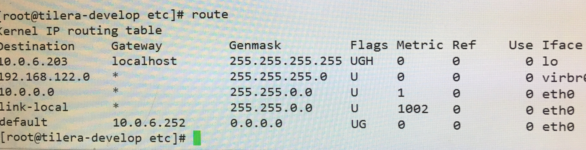

- list+行号(函数名)：查看某一行(函数)的代码
- break+file.c:行号: 在某个文件设置断点，如果只有一个文件则不需要
- 条件断点：break test.c:34 if count>50,一般用在循环中设置断点
- start: 停在main函数第一条
- run(r): 开始运行，停在断点处
- continue(c): 继续运行，停在下一个断点
- next(n): 单步执行
- until+行号: 继续运行，直到某一行停止
- p : 查看变量
- step(s): 进入函数
- quit(q): 退出gdb
- info threads: 显示所有线程信息
- gdb调试带参数的程序如main： gdb main ，r a b c ，abc为参数
- bt: backtrace,打印当前的函数调用栈信息
- ctrl+a+x: 上方显示源代码，下方gdb调试
Leetcode常用技巧
- return NULL和return 一个空的数组不是一回事
- unordered_set 和unordered_map和map,set的区别在于前者内部实现是hash，后者是红黑树
- 常见STL：
- string: push_back()，pop_back()，+，length()，empty()，s.append(n,c);
- vector: push_back()，pop_back()，size()，empty()，
- vector
vector1; - vector
vector1(n);//包含n个默认初始化的值 - vector
vector1(n,val); //包含n个数，默认值val - vector
vector1(vector2); - vector
vector1=vector2; - vector
vector1{1,2,3,4,5}; - vector
vector1={1,2,3,4,5};
- vector
- queue: pop，front，size()，empty()，
- 经常需要用到匿名对象：比如
- vector\
(n,false)); - vector.push_back(Test(1,2));Test是一个类
- vector\
- earse的删除操作:
|
|
- erase的sort()
|
|
- 在处理一些边界条件不好处理时，比如处理矩阵时要看四周，这时对于边界情况就不好处理，常见的方法是在周围加一圈，但是现在有更好的办法。
- 在边界时不成立： （j不在边界）&&（）—-在边界为0，后面不用算
- 在边界时成立：（j在边界）||（）—在边界时直接为1
- 常用的reverse(x.begin(),x.end())在库algorithm中
- INT_MIN,INT_MAX
- 二分法的时候：常用mid=left+(right-left)/2,我之前一直以为和mid=(left+right)/2一样。今天才发现不是这样的：
|
|
- 子串：必须连续
子序列：不必连续
c语言gets和scanf的区别
今天在写项目的时候遇到了读入不定字符串的问题，涉及到scanf和gets的区别，之前在这个问题上一直没有彻底弄懂，现在总结下。
二者在读入字符串时都会在后面加上\0
scanf在遇到空格，回车，tab的时候停止输入，并且将这些（空格，回车，tab）留在输入缓冲区中。
- gets遇到回车会停止输入，并且清空输入缓冲区
- scanf发现缓冲区有空格，tab,回车会跳过这些继续等待输入
- gets,getchar等遇到缓冲区有空格，tab，回车会读入，然后清空缓冲区。
- 值得一提的是，二者都是不安全的，容易读入恶意代码被攻击。
然后在具体的应用中，比如读入未知个数的int,string等,ctrl+z结束（linux下ctrl+d）
|
|
linux命令
查用法： man+命令(man中搜索用/,vim同)
读懂man 命令：–跟单词，-跟字母，[]表示可选，[-z,–gzip]实际上是一个参数，不同写法。
grep: golbal search regular expression and print
查看版本信息： lsb_release -a
- /表示根目录，~表示HOME目录
- 复制文件夹 ： copy -r
- 查看端口占用情况 ： netstat -antp | grep 8080
- 查看网卡对应网络：networksetup -listallhardwareports
- 查看进程占用信息： top
- 杀死某进程 ： kill -9 pid
- 打包压缩： tar -zcvf test.tar.gz /temp
- 解压： tar -zxvf test.tar.gz
- 查看进程信息 ： ps -ef | grep “”
- 全盘搜索某文件： locate+文件名
- 设置软链接 ：ln -s src dst(必须完整路径，如ln -s /home/a.cpp /usr/lib/a.cpp),删除按照普通文件处理就行
- 查看动态链接库： ldd+程序名（完整路径，环境变量无效，不知道为什么）
- 查看可执行文件位置： whereis
- 模拟tcp,ip通信神器：nc
- 捕获包：tcpdump
- 搜索历史命令： ctrl+r
- 搜索指文件夹中的字符串： grep -rn keyword ./ 表示递归搜索当前目录下的所有文件
- 远程传送文件：scp -P port file root@ip:/home/
- 远程登录： ssh root@ip -p port,如果不想每次都输入密码，可以配置一下公钥登录，具体教程
- 退出ssh：exit
- 追加文件：cat file1>>file2 将file1追加到file2
- 构造自己的命令：alias str=’command1;command2’,多条命令依次执行的时候，&&遇到错误会停止，;遇到错误会跳过
- grep -r “ “ ./ –color:搜索文件内容，将搜出来的内容标红
- find ./ -name test.c: 递归查找文件或文件夹
- tail -f file：监控文件的输出
- ctrl+a :光标移到行首
- ctrl+e:光标移动到行尾
- wc -l:统计文件函数，常用来配合|管道命令来用
- sed: 批量替换文件
- git diff file1 file2:diff两个文件
- awk: 强大的文件处理工具,会将文件按照分行，并且每一行按照空格分开，如awk ‘{print $14; print $4}’ data.20170516 | less.表示分行输出每一行的第4个和第14个变量。
- chown:change owner,改变文件的所有者。
- sudo chown -R $(whoami) ./ 将当前目录的所有文件(递归) 的拥有者都改成当前用户
- chmod: change mode，改变文件的属性(可读，可写，可执行)
- chmod u+x,g+x,o+x file1，将file1增加可执行权限，u:拥有者，g:用户组，o:其他用户，a:所有用户
- chmod 777 file2
- sed -n ‘5,10p’ filename: 显示5-10行
计网学习笔记
七层协议中，上一层对下一次是封装好的，比如tcp头，ip头对数据链路层来说都是一样的，都当成普通的报文来处理。
在arp协议解析的时候，主机和路由器地位是等价的，主机(路由器)发送广播，ip符合条件的主机(路由器)接收消息，发送个回应，从而让发送方确定目的地址的mac地址。所以在硬件层面，不管是主机还是路由器，都是通过mac地址发送的。
arp表，存在电脑中，是当前局域网内ip和mac地址的对应表，一般来说，是通过ip查到mac地址，查不到才用到上面所说的确定mac地址，确定后就记录到当前的arp表中。
内网，外网，一般来说ipconfig查到的都是内网ip，转换成外网ip要
经过NAT地址转换,判断内网ip的方法是：
10.xxx.xxx.xxx
192.168.xxx.xxx
172.16.0.0-172.31.255.255主机或者路由器在转发的时候先查route表，再查arp表

先把目的ip和mask做&，然后选择路由
eg1: 10.0.6.86, 符合第三条，Flags没有G，就是没有网关(属于同一局域网)，从eth0(网卡接口，一台计算机可能有多个网卡)出;然后再查arp表，找到了就直接发走，找不到发送广播(从eth0口)找到目的主机，再发出去。
eg2: 10.0.6.203，这个比较特殊(localhost优先级高)通过lo发到本地环回
eg3: 匹配不到，选择default网关，从eth0口出，然后网关再负责转发，网关就是局域网的出口。
在手动设置网络时，需要设置ip,子网掩码，dns地址，默认网关。
- 子网掩码：不用设置，按照DHCP的设置，因为DHCP表示的是这个局域网的大小，你没法改变。比如说一个路由器下的局域网的子网掩码为255.255.255.0，表示这是一个C类地址，子网内有255个主机。
- ip和默认网关，这个可以改，但是需要在一定的范围内改，先用默认网关&子网掩码，可以得到网段，这部分你不能改，你只能改后面的主机。比如默认网关为192.168.1.1,子网掩码为255.255.255.0,则网段为192.168.1.x;x可以从0-255之间你随便改。
- NAT地址转换:
- 根据dst_ip区分
- dst ip+src port区分
- 需要对src_ip也做一个nat
- 参考资料
http：url和uri的区别：
- url: universal resource location,我们通常见到的链接都是,url是uri的一种
- uri: universal resource identifier,能够标识一个东西的很多，不一定是url
markdown语法,长期更新
- 插入空格: +;前后留出空格出来
- !()[path]:插入图片
- <> 插入超链接,直接将网址括起来，注意加http
- []+():插入链接，[]里是显示文字，()里是link,+要去掉
- 空格： 全角下两个空格
- #+空格是一级标题，##+空格是二级标题，etc
- 星号+空格是一级目录，tab+星号+空格是二级目录，2tab+星号+空格是三级目录，etc
- ```（+语言） 是插入代码(高亮)，1左边的那个键
- 下划线打不出来，需要转义，\加_即可
git教程
- git 的结构：
- 工作区：也就是我们平时看到的文件
- 暂存区：git add之后将改动存到暂存区
- 本地版本库： 分支信息
- 关于暂存区： git commit 之前都是不与具体分支关联的，举个例子，master与dev都是最新的，在dev分支修改某文件，添加到暂存区，然后切换到master分支去提交，这个提交算master分支的。
- git checkout branch:
- git checkout 会用本地版本库中的分支替换工作区的内容。具体来说，当你执行git checkout 时，git 会判断切换分支和当前分支的关系，如果都是最新的，则工作区不变，暂存区也不变。就如上面的例子，没提交之前dev和master是一样的，所以checkout master时工作区不变。
- checkout master时，如果dev和master不同，就会用master来替换工作区，同时清空暂存区，如果暂存区有在dev分支修改的文件，系统就会提示暂存区会清空，dev分支的修改无效，可以选择commit 或者stash。
- git add
- git add是将工作区的文件保存到暂存区，最好养成习惯，git add ,git commit -m ‘’,不要直接git commit -a -m ‘’。因为git add可以分批次添加到暂存区。
- git merge:
- merge冲突： 冲突原因：开始master和dev相同，后来master修改了A文件的第n行，dev修改了A文件的第
建立本地仓库—>修改本地文件—>commit到本地git—>sync到远程git

commit: 提交到本地git仓库
sync(push): 同步到远端git仓库
pull request(pr): 将自己的分支merge到另一个分支
fork: 复制别人的仓库并创建一个branch(分支)
pull: 将你fork的仓库中的同步到本地git中
clone: 将自己远端git的项目(fork或自己建的)复制到本地git上

注意：
- commit 之后要sync
- 多人共同修改某个项目，为了避免冲突，最好先pull，同步一下最新的版本再提交自己的代码
在实际项目中，一般常用的git 操作一般为：
- git clone: 克隆一个仓库
- git branch: 查看本地分支
- git branch -a: 查看所有分支，本地和远程
- git fetch: 取回所有分支的更新
- git branch –set-upstream-to=origin/dev
- git branch -d 本地分支：删除本地分支
- git difftool 分支1 分支2：用ksdiff查看diff
git stash: 暂存不提交本地的改变
git checkout -b 本地分支:新建一个本地分支并切换
- git commit -a -m ‘fix bugs’
- git push 远程主机名 本地分支: refs/for/远程分支名(refs/for表示评审)
- 初始化一个分支的时候一般： git push -u origin master,表示设置默认主机为origin,没有远程分支会新建一个并且建立追踪关系，以后直接git push就行了。
- git push -u 远程主机名 本地分支 ：-u 设置默认主机
- git config –list查看git配置信息
- git branch -vv:查看分支对应关系
- git 不支持上传空目录，所以一般上传空目录的时候要在里面添加一个无用的文件.gitignore
java语言基础，长期更新
0.eclipse操作技巧：ctrl+变量： 查看定义
ctrl+7 批量注释
1.命名规范：
包名： cuiyiming
类名/变量名： CuiYiMing
方法名：cuiYiMing
常量名：CUI_YI_MING
2.大括号： 第一个不换行
2.main 函数：
只能是 public static void main(String[] args)形式，public 表示函数可以访问，static 表示 属于这个类，不需要new 对象,void 表示没有返回值，因为不知道返回值给谁。所以强制规定没有。
3.import 类似于c#中的namespace,逻辑上对类进行组织和管理。
4.java 访问权限:
public protected default private
修饰类：public default
修饰成员变量和函数： public protected default private
判定一个函数能否访问，先通过类修饰符，再通过函数修饰符，两重判定

5.static :静态量，属于类，存在静态存储区，编译时分配内存。
特点：静态方法只能调用静态变量。
原因：非静态量调用时必须要有this指针，但是静态方法显然不能为他提供this 指针。
c语言基础，长期更新
include” “ 的话编译器环境首先会在你当前所在的目录来找寻头文件，当所在目录没有的话，它就会到标准头文件库来找，找不到就报错，
<>的话它一开始就到标准头文件库来找，找不到就报错！典型错误
|
|
- strlen和sizeof区别
|
|
static 和extern的用法
- static
- 位置在内存的全局变量区
- static + 全局变量表示该变量只能在该文件中用，其他文件中即使加了extern也不好使。
- static + 函数表示该函数只能在该文件中用
- static + 局部变量，变量作用域不变，但是生存周期直到程序结束，所以变量实际只有一份。
extern
- extern + 全局变量，该变量在该文件中并没有定义，只是告诉编译器链接的时候去其他文件中去找。
举个例子: errno的原理就是这样
12extern int errno; //只是声明, 在<errno.h>中strerror(errno);// errno在其他文件中定义extern “C”,当希望cpp的代码按照c的符号表去编译时(即希望该cpp被C代码调用),需要加上这个。详细说明
12345678#ifdef cplusplusextern "C"{#endif//这里写你自己要用c的方法编译的代码//之所以把ifdef拆成两个来写主要是为了好看。。。#ifdef cplusplus}#endif
- static
关于函数的声明和定义：
- 函数的声明主要是C语言本身的缺陷，即一遍扫描。函数声明的作用：告诉编译器我有这个函数，你下面用到的时候不要告诉我找不到这个函数。
- 声明和定义的参数和返回值不同编译不过去。
- 符号表的生成：函数定义的时候才生成符号表，C语言的符号表只和函数名有关，C++的符号表和参数和返回值都有关，这就是所谓的函数重载。
- 符号表的作用：链接的时候用，比如你调用其他文件的函数，你只需要包含它的头文件就可以编译过去，链接的时候根据函数名去符号表中去查，找到符号表对应的函数的地址。
- 可以用nm命令查看符号表。
int main(int argc,char** argv),其中argv[0]是程序完整路径，所以argc总是比实际输入的参数多1
多个if特别容易出错，要注意。加个else养成习惯
|
|
- #progama once 一般自己写头文件的时候用，这个保证了编译的时候该头文件只会被打开一次。
- 关于相对路径的问题：
- 一般情况：当前路径指的是该程序所在的路径，如 fragroute a.txt. 那么如果txt文件中有打开其他文件，用的是相对路径，那么当前路径就是fragroute所在的路径
- 编译头文件的时候：头文件经常包含其他头文件，用的是相对路径，那么当前路径指的就是该头文件所在的路径。
- 在网络编程中经常遇到字节序和网络序的问题（大端，小端），有些还有位域的问题。
从程序员的角度来说：其实不用管具体的原理，对于多字节来说，发送和接收用htonl(),nltoh()就行，位域的问题，只要定义了大小端之后就按照正常的结构体成员来用就行。
具体的原理可以参考：
点我查看原理 - C 语言文件操作写入文件时，有时程序意外终止，文件并没有写入，这是因为读写缓冲区的存在。解决方法：每次fprintf之后，fflush清空缓冲区，立即写入。
- linux下经常遇到很多格式的数不知道输出格式，如u_int32_t这种，可以用IntTypes.h这个头文件。
- calloc和malloc的区别：calloc申请的内存会初始化为0,malloc不会初始化。
- system(“cmd”)可以在代码中执行linux命令
- 返回值：void表示没有返回值，void* 表示返回一个无类型的指针。
并行，并发和锁
并行：多个处理器，从硬件角度真正意义的同时进行
多线程：只是逻辑上的并行，同一时刻还是只有一个线程发生
并发：并行和多线程都叫并发
关于锁：
不管并发并行，只要存在共享内存，就要考虑加锁的问题。
锁的实质：都是通过阻塞线程实现的(一个线程申请锁未释放，另一个锁再申请就会线程就会阻塞)，区别就是这个锁作用的范围，是否多个进程可以共享这个锁。
几种锁的区别:（都是阻塞线程）
semphore:信号量，多个进程之间也可以用，多用于共享内存
mutex: 互斥锁，多个进程之间不能用，阻塞的，由操作系统唤醒。
自旋锁：和互斥锁相似，区别就是不是阻塞的，不是休眠然后被操作系统唤醒，而是自己占用cpu，一直查询锁是否被释放
dpdk自带的读写锁：
rte_write_lock: 该锁被申请后，其他线程不能读也不能写
rte_read_lock: 该锁被申请后，其他线程不能写
写时独占，读时共享 => 写的时候加写的锁，读的时候加读的锁。